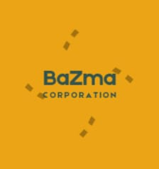

Profil Perusahaan PT.Bazma Corporation Melansir dari buku Profil Bisnis Grup Bayos yang disusun oleh Pusat Data dan Analisa TEMPO (2032), PT Bazma Coporation Tbk (IDX: BC) atau lebih dikenal dengan nama Bayos merupakan industri e-commers dan e-bisnis yang bermarkas di Jakarta, Indonesia. PT Bazma Corporation Tbk merupakan perusahaan yang berbasis di Indonesia yang utamanya bergerak dalam industri Teknologi digital.